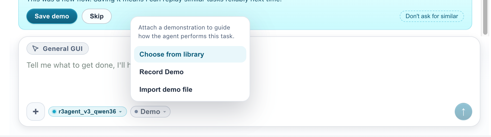

1. Before you start
| Machine | Apple Silicon Mac (M1/M2/M3/M4) for the desktop app. Intel Macs cannot run the client. |
|---|---|
| System | macOS 13 Ventura or later |
| Disk | About 2 GB free |
| Model service | Required — the app has no built-in model. See Deploy. |
Install the macOS app, grant permissions, connect a model endpoint, then run tasks or record a demo.
| Machine | Apple Silicon Mac (M1/M2/M3/M4) for the desktop app. Intel Macs cannot run the client. |
|---|---|
| System | macOS 13 Ventura or later |
| Disk | About 2 GB free |
| Model service | Required — the app has no built-in model. See Deploy. |

Screen Recording and Accessibility are required. Use the in-app buttons — do not add the app manually in System Settings.
| Permission | UI label | Why |
|---|---|---|
| Screen Recording | Screen Recording | See the screen; record demos |
| Accessibility | Accessibility | Click and type; capture your demo actions |


Open Settings (gear). Changes save automatically. Fill Model Configuration, then Test Connection.
| Field | What to enter |
|---|---|
| Agent type | UI-Mate (default, for our trained models) |
| Endpoint | Service URL, usually ending in /v1 |
| Model | Served model name — must match the server exactly |
| API Key | Leave blank if unused |
| Provider | openai_compatible |
No endpoint yet? Ask whoever runs the model service, or follow Deploy. For a quick dry-run only: OpenRouter + Agent type Kimi — not the project model.

/demo) → mode becomes demo-in-the-loop, then send the task.The demo is guidance, not a frame replay — the live screen stays authoritative.



| Symptom | Fix |
|---|---|
| Permissions banner stuck | ⌘Q and reopen; remove old app copies from Applications, then re-grant. |
| Test Connection 404 model not found | Model name must match the server exactly. |
| 404 with correct model | Endpoint must end with /v1 for UI-Mate. |
| Cannot start a new task | Only one run at a time — Stop first. |
| Apply does nothing | Process the recording until it is Reusable. |
The app is an OpenAI-compatible HTTP client. Deploy = run a VLM service, then fill three fields in Settings.
| Field | Notes |
|---|---|
| Endpoint | Base URL, usually ending in /v1 |
| Model | Served model name — exact match |
| Agent type | UI-Mate for our trained models · Kimi for Kimi-family endpoints |
Fastest path to try the UI. Not the project model.
| Agent type | Kimi |
|---|---|
| Endpoint | https://openrouter.ai/api/v1 |
| Model | moonshotai/kimi-k2.6 |
| API Key | Your OpenRouter key |
Team / eval setup on a multi-GPU box. Example launch:
vllm serve "$MODEL_PATH" \
--served-model-name gui-agent-27b \
--trust-remote-code \
--chat-template-content-format openai \
--limit-mm-per-prompt '{"image":10,"video":0}' \
--tensor-parallel-size 2 \
--data-parallel-size 4 \
--max-model-len 32768 \
--host 0.0.0.0 --port 8080
--limit-mm-per-prompt image=10 must cover history screenshots.http://<GPU_IP>:8080/v1 · Model = served name · Agent UI-Mate.Offline on Apple Silicon. Convert, serve, then point the app at localhost.
python -m mlx_vlm.convert \ --hf-path /path/to/9b-checkpoint \ --mlx-path ~/models/gui-agent-9b-mlx-4bit \ -q --q-bits 4 --q-group-size 64 KV_BITS=4 PREFILL_STEP_SIZE=1024 \ python -m mlx_vlm.server \ --model ~/models/gui-agent-9b-mlx-4bit \ --port 8080
| Endpoint | http://127.0.0.1:8080/v1 |
|---|---|
| Model | ~/models/gui-agent-9b-mlx-4bit |
| Agent type | UI-Mate |
Local must-tunes: image detail balanced_1280, keep 1–2 screenshots.
Stock mlx-vlm barely hits prefix cache on multi-turn agent loads. Download the patch pack, unzip, apply — about 3× prefill and ~2× end-to-end step time.
pip install mlx-vlm==0.6.8 unzip mlx-vlm-gui-agent-cache.zip cd mlx-vlm-gui-agent-cache && ./apply.sh export APC_ENABLED=1 export APC_GROWING_IMAGES=1 export MLX_INLINE_IMAGE_POSITIONS=1 export MLX_VLM_PER_IMAGE_VISION_CACHE=1 export MLX_VLM_VISION_CACHE_SIZE=20 export APC_EXACT_CACHE_ENTRIES=8 export APC_EXACT_PREFIX_GUARD_TOKENS=64
Prefill completed shows cached_tokens > 0.